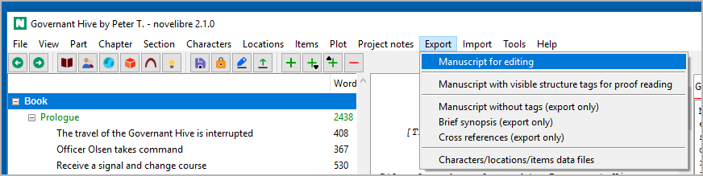
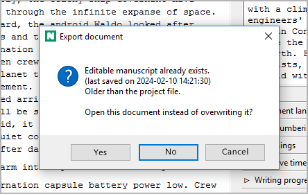
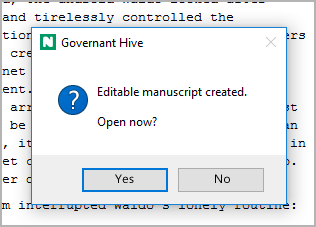
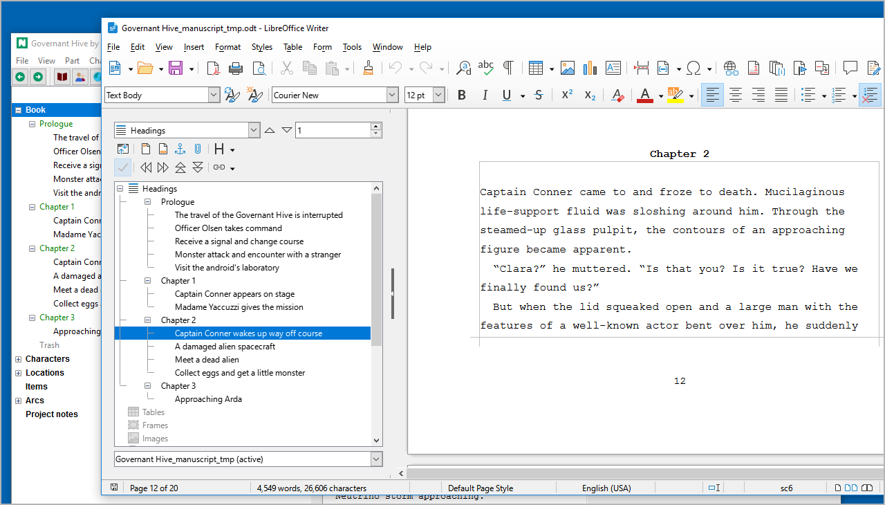
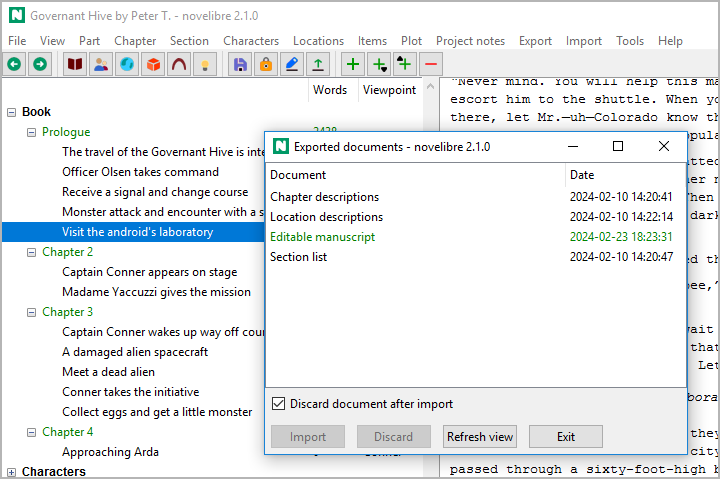
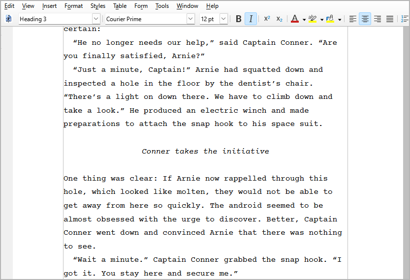
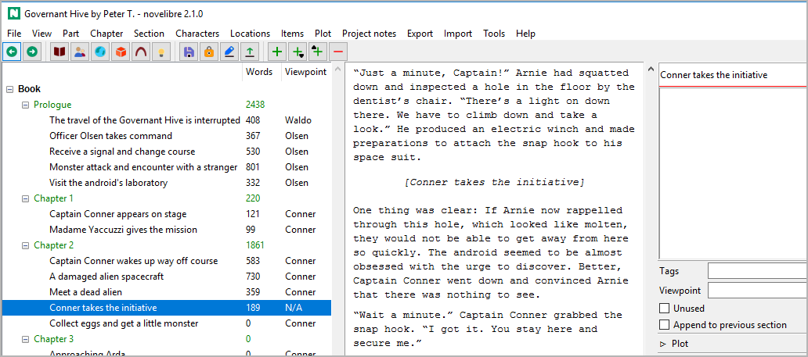
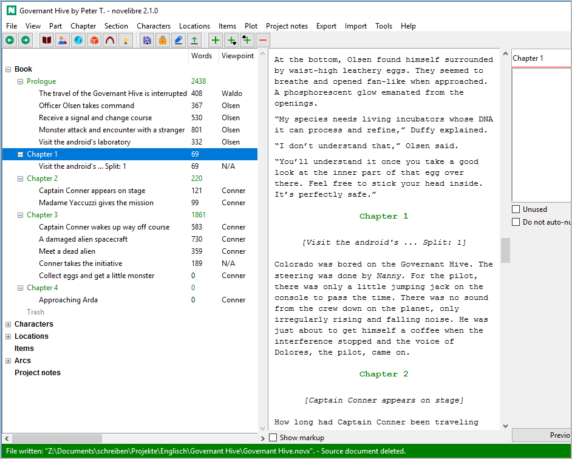

Writing the manuscript
Starting LibreOffice as text editor
Note
The following example describes the manuscript editing workflow with LibreOffice. The same applies to OpenOffice.
Other word processing programs that claim to support the .odt file format are generally not recommended.
As soon as your novel project has at least one section, you can start writing. For this, you save your project and export your novel to LibreOffice either with Export > Manuscript for editing, or by clicking on the toolbar icon.
Hint
If you use the menu command, you can have novelibre create a manuscript, and ask whether it should be opened with LibreOffice.
If you click on the toolbar icon, LibreOffice will be launched immediately after export.

novelibre screenshot
If you have done this before and there is still a manuscript document from the previous writing session, you will now be asked whether you want to continue working on this document. In this case, answer “Yes”.

novelibre screenshot
If you answer “No”, novelibre creates a new manuscript document.
If you started the export using the Export menu command, you will now be asked whether you want to open it.

novelibre screenshot
If you answer “yes”, LibreOffice will be launched with the manuscript document. Otherwise, the document is just kept for future use.
novelibre now locks the project, so that it can’t be accidentally modified while open in LibreOffice.
Note
novelibre starts your standard application for the .odt file format. By default, this setting is made by LibreOffic during installation.
After you change to LibreOffice Writer, you see the whole novel in
a layout that is similar to the “standard manuscript format”. The
Navigator (open with F5) shows the chapter and section titles
in the Headings area. Double click on a heading to move the cursor
to that location. You can now write within the frames that define
the sections.

LibreOffice Writer screenshot: Note that the text boundaries are made visible here, which is highly recommended
Note
The section headings are invisible in the workspace so that they do not disrupt the flow of writing, and the impression of an original manuscript page is retained.
Writing changes back to novelibre
At the end of the writing session, save the changes, exit LibreOffice Writer, and return to novelibre. Simply click on the toolbar icon, and your latest changes will appear.
Note
The toolbar icon mentiones above is only for the manuscript. If you want to apply changes made in other documents, like character sheets, or synopses, use the Import menu.

novelibre screenshot: The manuscript entry is highlighted in green, because the file is newer than the open project.
Creating new sections
If you need a new section while writing, you don’t have to switch
to novelibre. Simply start a new line with a special marker
###. Optionally, you can add a section title, and, separated
by |, a section description. All other metadata is intended
to be entered in novelibre later.
The following example shows how to split an existing section:

LibreOffice Writer screenshot: Notice the highlighted section marker
Back in novelibre, you see the new section. It has got a title, but no other metadata.

novelibre screenshot: Notice the selected new section
Creating new chapters
If you need a new chapter while writing, you don’t have to switch to novelibre. Simply start a new line within the edited section with a second-level heading.
Important
novelibre only re-imports text within section defining frames. Technically, it always splits sections when creating new chapters or sections from the manuscript.
You also cannot move chapters within LibreOffice Writer. If you want to rearrange chapters or sections, do it with novelibre.
The following example shows how to add a chapter with LibreOffice Writer:

LibreOffice Writer screenshot: It doesn’t matter what the new chapter is titled
Back in novelibre, you see a new chapter and a new section. Since the chapters are auto-numbered in this example project, the new chapter title already fits, while the new section’s title should be adjusted manually.

novelibre screenshot